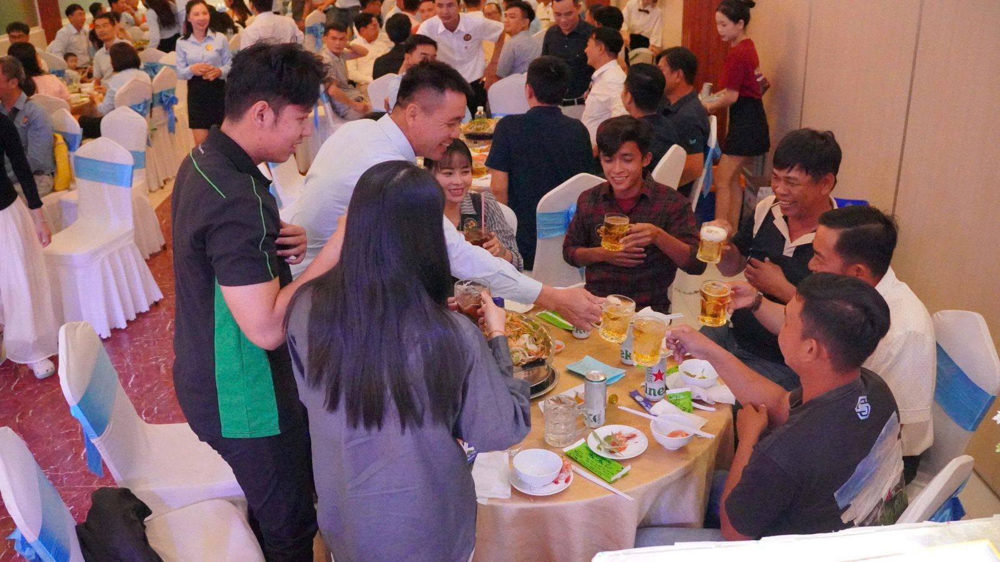
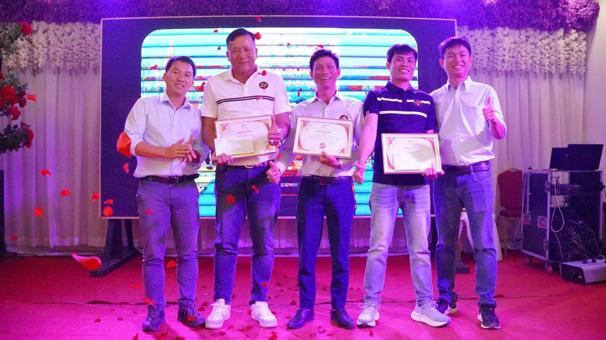
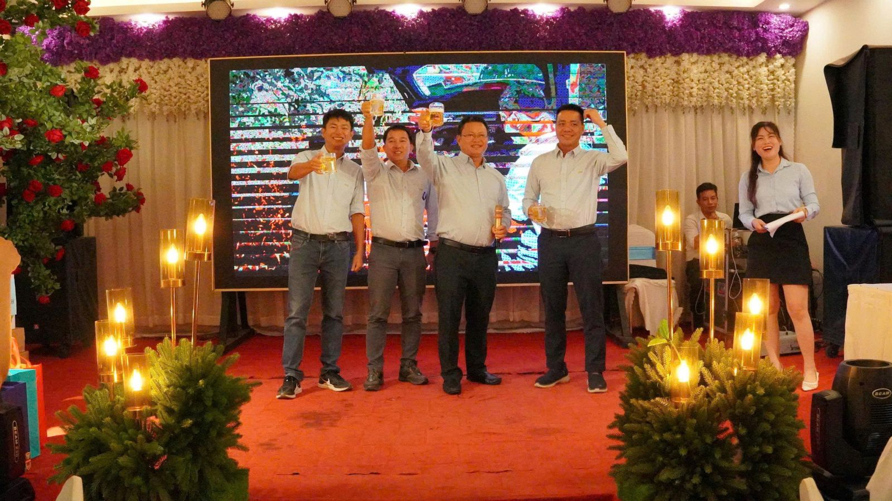
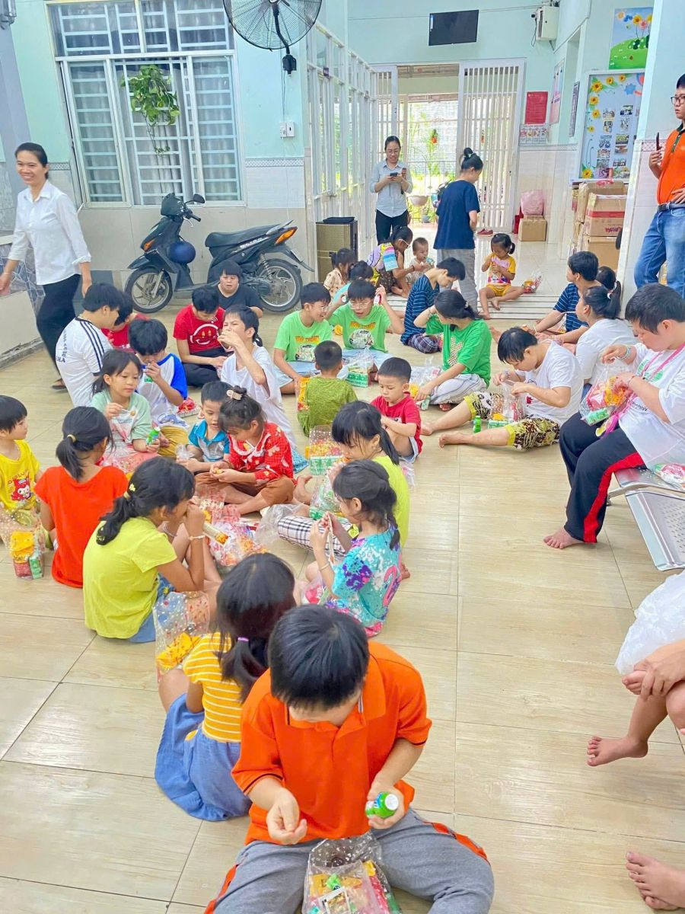
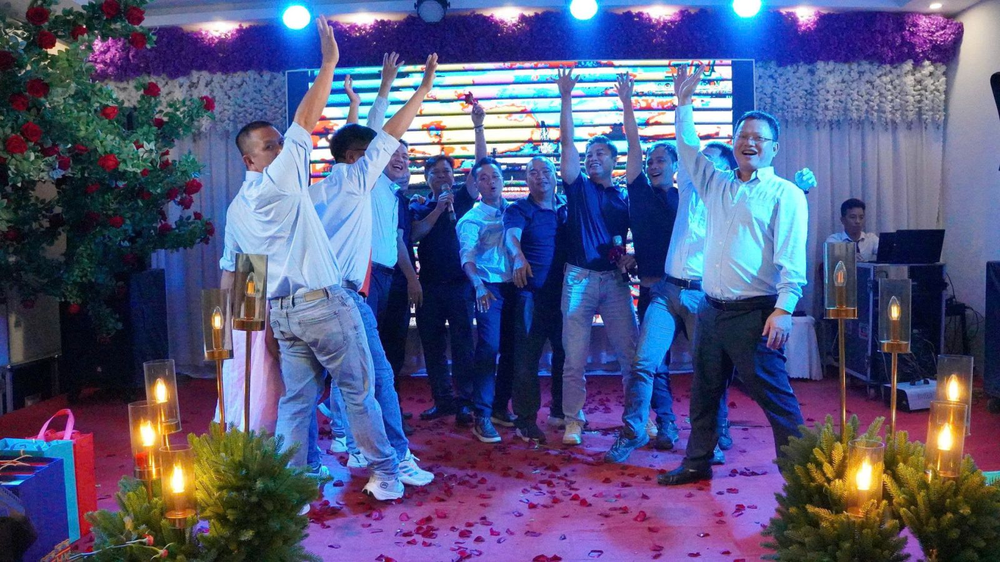

Tư Vấn & Thiết Kế

Cung cấp dịch vụ tư vấn và thiết kế chuyên sâu cho các công trình công nghiệp, nhà xưởng, nhà máy sản xuất và công trình thủy lợi. Đội ngũ kỹ sư giàu kinh nghiệm đảm bảo thiết kế tối ưu về kết cấu, công năng và chi phí, đáp ứng đầy đủ tiêu chuẩn kỹ thuật Việt Nam và quốc tế.
Với đội ngũ kỹ sư thiết kế nhiều năm kinh nghiệm trong lĩnh vực công nghiệp và thủy công, Song Ngọc cung cấp giải pháp tư vấn thiết kế toàn diện từ khảo sát địa hình, địa chất đến lập hồ sơ thiết kế kỹ thuật, bản vẽ thi công và dự toán chi phí. Chúng tôi tư vấn thiết kế nhà máy, kho xưởng, công trình cảng bến, đê kè và hệ thống thủy lợi theo tiêu chuẩn TCVN, ASTM và Eurocode.
Công Trình Công Nghiệp & Dân Dụng

Thi công xây dựng các công trình công nghiệp và dân dụng quy mô lớn bao gồm nhà máy, kho xưởng, tòa nhà văn phòng, khu dân cư và công trình hạ tầng kỹ thuật. Cam kết chất lượng thi công theo đúng thiết kế, tiến độ hợp đồng và tiêu chuẩn an toàn lao động nghiêm ngặt.
Song Ngọc có năng lực thi công đa dạng công trình từ nhà xưởng kết cấu thép khẩu độ lớn, nhà máy sản xuất chuyên dụng đến tòa nhà văn phòng và khu dân cư phức hợp. Sở hữu đội ngũ thi công lành nghề, máy móc thiết bị hiện đại và hệ thống quản lý chất lượng ISO, chúng tôi đảm bảo mỗi công trình đều đạt tiêu chuẩn kỹ thuật cao nhất.
Cầu, Cảng & Giao Thông
Thi công chuyên nghiệp các công trình giao thông và hạ tầng cảng biển bao gồm cầu bê tông cốt thép, cầu treo, cảng hàng hóa, bến phà và hệ thống đường bộ cao tốc, quốc lộ. Có kinh nghiệm thi công tại các vùng địa hình khó khăn: đồng bằng ngập nước, ven biển và hải đảo.
Lĩnh vực thi công cầu cảng và giao thông là thế mạnh cốt lõi của Song Ngọc với nhiều công trình trọng điểm quốc gia đã thực hiện. Chúng tôi có năng lực thi công cầu bê tông dự ứng lực, cầu thép, cảng nước sâu tiếp nhận tàu lớn, đường cảng và hệ thống giao thông nội bộ khu công nghiệp.
Chống Ăn Mòn Trên Biển

Cung cấp giải pháp bảo vệ chống ăn mòn toàn diện cho các kết cấu thép và bê tông tiếp xúc môi trường biển xâm thực. Áp dụng công nghệ tiên tiến bao gồm hệ thống bảo vệ cathodic (ICCP/SACP), sơn phủ epoxy hàng hải cao cấp và vật liệu composite chống ăn mòn.
Song Ngọc là một trong số ít đơn vị tại Việt Nam có chuyên môn sâu về chống ăn mòn công trình biển. Chúng tôi cung cấp giải pháp tổng thể từ khảo sát hiện trạng ăn mòn, thiết kế hệ thống bảo vệ đến thi công và bảo trì định kỳ. Sản phẩm và vật liệu nhập khẩu từ các hãng uy tín quốc tế đảm bảo tuổi thọ bảo vệ 20-30 năm cho kết cấu biển.
Cơ Giới & San Lấp Mặt Bằng

Thực hiện công tác cơ giới hóa thi công quy mô lớn bao gồm san lấp mặt bằng, đào đắp đất, bơm hút bùn, xử lý nền đất yếu và hoàn thiện mặt bằng công trình. Sở hữu đội máy móc thiết bị cơ giới đồng bộ, công suất lớn phù hợp địa hình đồng bằng và ven biển.
Với đội ngũ máy móc thiết bị hiện đại gồm máy đào, xe lu, xe ủi, xe chở đất, máy bơm cát và thiết bị phụ trợ, Song Ngọc có khả năng thực hiện các hợp đồng san lấp mặt bằng hàng trăm hecta. Chúng tôi áp dụng công nghệ xử lý nền đất yếu như bấc thấm, cột xi măng đất, đệm cát và gia tải trước.
Cấu Kiện Đúc Sẵn

Sản xuất và thi công lắp đặt các loại cấu kiện bê tông đúc sẵn chất lượng cao bao gồm cọc bê tông cốt thép, dầm cầu dự ứng lực, cống hộp, mương thoát nước và tấm đan. Quy trình sản xuất kiểm soát chặt chẽ đảm bảo chất lượng đồng đều, cường độ bê tông đạt yêu cầu thiết kế.
Song Ngọc đầu tư xưởng sản xuất cấu kiện bê tông đúc sẵn trang bị khuôn thép chính xác, hệ thống dưỡng hộ hơi nước và thiết bị kiểm tra chất lượng. Chúng tôi sản xuất cọc vuông BTCT C40-C50 từ 200×200 đến 400×400mm, dầm I, dầm T, cống hộp và các cấu kiện đặc biệt theo yêu cầu dự án.
Cho Thuê Thiết Bị & Nhân Công

Cung cấp dịch vụ cho thuê thiết bị thi công chuyên dụng và điều phối nhân công lành nghề cho các nhà thầu và chủ đầu tư. Đội thiết bị đa dạng từ máy đào, cần cẩu, búa đóng cọc đến thiết bị thủy công chuyên biệt, vận hành bởi đội lái máy nhiều kinh nghiệm.
Dịch vụ cho thuê thiết bị và cung cấp nhân công của Song Ngọc giúp các đơn vị thi công tiếp cận nhanh nguồn lực máy móc và lao động chuyên nghiệp mà không cần đầu tư vốn lớn. Chúng tôi có sẵn đội máy đào thủy lực 5-30 tấn, cần cẩu bánh xích 50-150 tấn, búa rung đóng cọc ống thép, máy bơm bùn và các thiết bị phụ trợ.